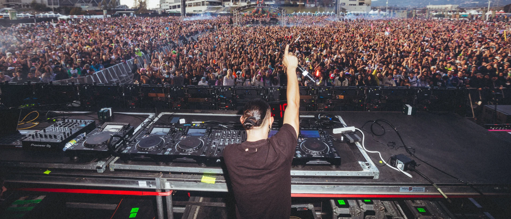

Sonny John Moore , cunoscut ca Skrillex, este un DJ, compozitor, cântăreț și producǎtor american de muzică electronică (în special dubstep și brostep). A început primul său turneu în calitate de artist solo la sfârșitul anului 2007, mergând la primul tur de Team Sleep Tour cu Team Sleep, Strata, și Monster in the Machine. Moore viziteazǎ America de Nord cu Alternative Press Tour, sprijinind așa trupe, ca All Time Low și The Rocket Summer, a apǎrut pe coperta revistei Alternative Press, într-un numǎr anual a "100 de grupuri pe care trebuie sǎ le cunoașteți" (100 Bands You Need to Know). În iunie 2008 împreunǎ Noe Shane au început înregistrǎrile pentru albumul lor de debut, Bells. Tot atunci au lansat un mini-album Scary Monsters and Nice Sprites. A participat la înregistrarea albumului The Path of Totality al formației Korn. Skrillex a fost nominalizat la trei premii "Grammy", în 2011, inclusiv "Best New Artist". La a 54-a ceremonie "Grammy", a fost acordat în trei categorii: «Scary Monsters and Nice Sprites» - Cel mai bun album electronic; «Scary Monsters and Nice Sprites» - Cea mai bunǎ înregistrare dance; «Benny Benassi - Cinema (Skrillex Remix)» - Cel mai bun remix.
